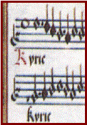
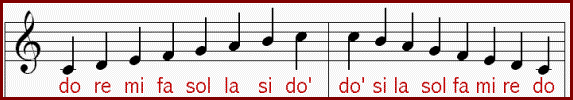
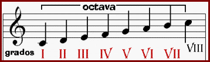
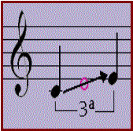
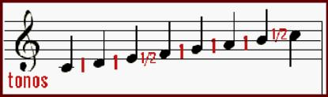

Las notas musicales son la
representación de los sonidos.
A lo largo de la historia han sufrido distintas
modificaciones hasta llegar a la notación actual. No siempre han sido redondas.
Con Guido de Arezzo (1030) eran cuadradas, y en los siglos XVI y XVII se
empleaban además para ciertos instrumentos letras y números. Justamente en
estos siglos XVI y XVII es cuando las notas se convierten en redondas.
En la actualidad son siete que en orden ascendente
son: DO, RE, MI, FA, SOL, LA, SI. En orden descendente: SI, LA, SOL, FA, MI,
RE, DO. Desde la nota DO hasta la nota SI tenemos una escala musical, después
de SI comenzaría de nuevo el DO aunque con un registro más agudo que el DO
anterior. La distancia entre el primer y el segundo DO se llama octava.
Esta Sería su colocación en el pentagrama en clave de Sol:

Escucha
la escala: Ascendente y descendente.
Cuanto más arriba están las notas en el
pentagrama representan sonidos más agudo, y cuanto más bajo, más graves,
estableciéndose así una relación visual de la altura de los sonidos.
LA
ESCALA
Llamamos escala diatónica a la sucesión
de siete notas correlativas. En el gráfico anterior hemos observado la escala
diatónica de DO primero ascendente y luego descendente. Cada nota de la escala
es un grado. Al grado I (primero) lo llamamos tónica, al grado V
(quinto) lo llamamos dominante, al grado VII (séptimo) lo llamamos sensible.

INTERVALOS

La distancia entre dos sonidos (notas) distintos se llama intervalo. Éstos pueden ser ascendentes o descendentes y se designan numéricamente según el número de notas que las separan incluido ellas mismas. Es decir, de DO a MI es un intervalo ascendente de tercera porque contamos tres notas (DO, RE, MI); De DO a SOL es un intervalo ascendente de quinta porque contamos cinco notas (DO, RE, MI, FA, SOL).
TONOS
Y SEMITONOS
La distancia entre dos notas
naturales correlativas puede ser de un tono o de un semitono (medio tono). En
la sucesión de notas naturales en la escala ascendente de Do mayor encontramos
un semitono entre MI y FA y otro semitono entre SI y el DO siguiente. Entre DO
y RE, RE y MI, FA y SOL, SOL y LA, LA y SI , son distancias de un tono. En cualquier
escala en modo mayor encontraremos semitonos entre los grados III-IV (tercero y
cuarto) y VII-VIII (séptimo y octavo).
